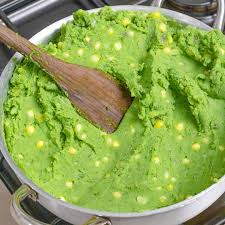
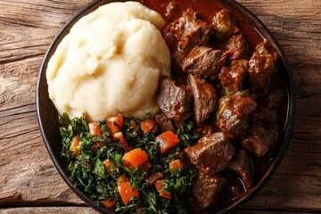
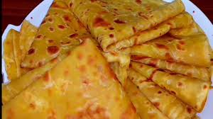
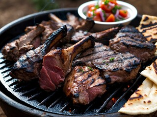

Mukimo
Mukimo is prepared by mashing potatoes and green vegetables with a few maize and beans being added unsmashed .
Mukimo is mostly served as an accompaniment for meat-based stew and nyama choma.

Ugali Fry
A traditional meat dish from Kenya, and can be made with goat meat, beef, or lamb.
It is best to barbecue the goat meat at medium to low temperatures.

Chapati
Kenyan chapati is a soft, rich-flavored unleavened flatbread, served with stews, curries, or as a wrap sandwiches.

Choma with Kachumbari
Grilled or barbecued meat, traditionally goat or beef which is seasoned then served with salt, chipped tomatoes, pepper,
a marinade of onions, garlic and ginger